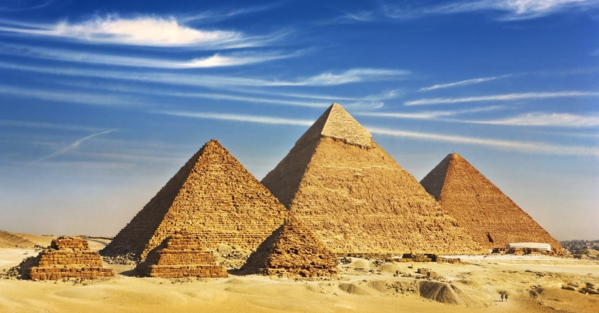
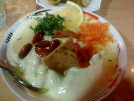

The land, where the glorious history and the spirited present are intertwined by the world’s longest river – the Nile, is waiting for you to discover it. Open your eyes and listen carefully. A blend of thousands of years of Arab history and famous legacy of the pharaohs await you. By exploring the desert, mysterious temples and large cities, you will see that Egypt is truly a land of contrasts, which has something for every traveller no matter where you go.
Let’s start with the capital of Egypt – Cairo. I recommend visiting the Khan El-Khalili bazaar in Cairo’s old town to start getting to know the Egyptian soul right away. There, you can master the art of haggling or observe the hustle and bustle while sipping tea. The centre is ideal for exploring mosques from various periods that are still full of riches from bygone eras. The main attraction, the famous Pyramids of Giza, lies a little further away, guarded by the sphinx holding its head up high. I suggest touring the Pyramids at night and they’ll tell you their story with the help of lights and sounds over some tasty traditional food that most certainly includes the delicious kunafa. If you’re thinking about a day trip, it’s best to go on a trip to Alexandria, one of the most legendary cities of the Old World. You’ll start exploring Alexandria in the world’s largest library that is home to six million books. You’ll also visit the world’s oldest church and a whole lot of traditional markets where people sell all kinds of things. The tour will even take you to the romantic Montazah Palace Gardens. To the west of Alexandria is the Nile Delta, swelling with birds and lotus blossoms. What else is there to do in Cairo? You can go on a day cruise on the Nile with traditional felucca boats, just like Cleopatra. This will give you a real sense of what it’s like sailing on the world’s longest river. Boarding the train to Aswan in southern Egypt and observing green fields, the Nile and villages speeding by is rather exciting for travellers. Just give in to the beauty of the Egyptian landscape.

Khan el-Khalili is a famous bazaar and souq in the historic center of Cairo, Egypt. Established as a center of trade in the Mamluk era and named for one of its several historic caravanserais, the bazaar district has since become one of Cairo's main attractions for tourists and Egyptians alike.
he Egyptian pyramids are ancient pyramid-shaped masonry structures located in Egypt. As of November 2008, sources cite either 118 or 138 as the number of identified Egyptian pyramids. Most were built as tombs for the country's pharaohs and their consorts during the Old and Middle Kingdom periods.The oldest and largest of the three pyramids at Giza, known as the Great Pyramid, is the only surviving structure out of the famed Seven Wonders of the Ancient World.

The Museum of Egyptian Antiquities, known commonly as the Egyptian Museum or Museum of Cairo, in Cairo, Egypt, is home to an extensive collection of ancient Egyptian antiquities. It has 120,000 items, with a representative amount on display, the remainder in storerooms. Built in 1901 by the Italian construction company Garozzo-Zaffarani to a design by the French architect Marcel Dourgnon, the edifice is one of the largest museums in the region. As of March 2019, the museum is open to the public. In 2020 the museum is due to be superseded by the new Grand Egyptian Museum at Giza.
Ful medames is a classic Egyptian dish that you will also see on the tables in other countries in the region. It's an incredibly simple dish of warm, seasoned fava beans, but also so comforting. And if you start with canned beans, it only takes a couple of minutes to make.
Fatteh meaning crushed or crumbs, also romanized as fette is a class of Levantine dishes consisting of pieces of fresh, toasted, or stale flatbread covered with other ingredients.